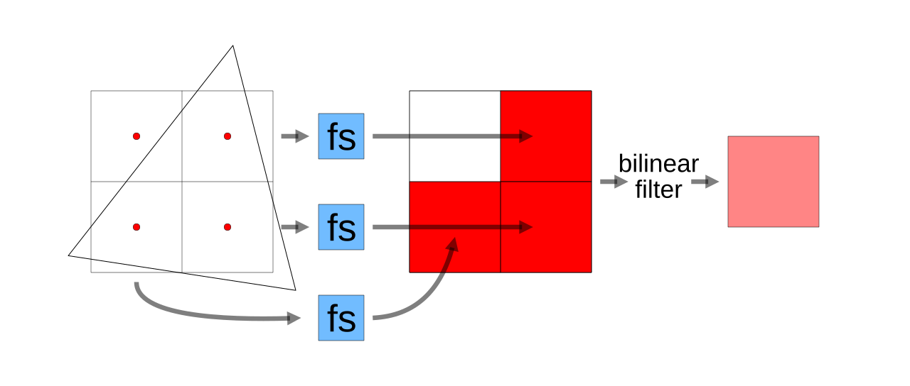
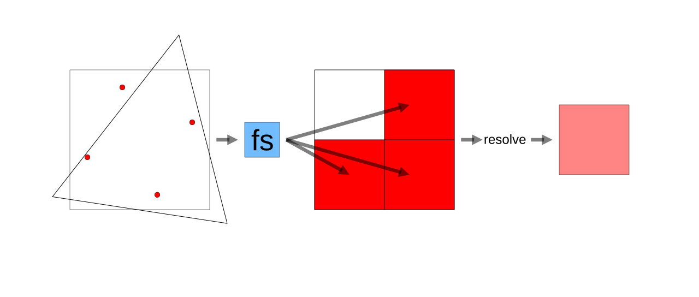
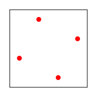
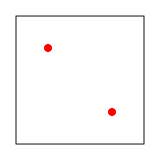
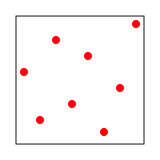
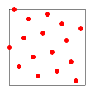
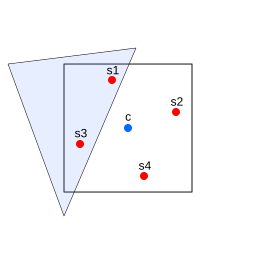
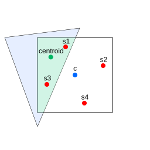

MSAA significa Antialiasing por Multisampling (Multi-Sampling Anti-aliasing). El antialiasing consiste en intentar prevenir el problema del aliasing, donde el aliasing es el aspecto pixelado o dentado que obtenemos cuando intentamos dibujar una forma vectorial como píxeles discretos.
Mostramos cómo WebGPU dibuja cosas en el artículo sobre los fundamentos.
Toma los vértices en el espacio de recorte (clip space) que devolvemos para el valor @builtin(position) en el vertex shader (shader de vértices)
y por cada 3 calcula un triángulo; luego llama al fragment shader (shader de fragmentos) para el centro de cada píxel
que esté dentro de ese triángulo para preguntar qué color darle al píxel.
El triángulo de arriba se ve muy pixelado. Podemos aumentar la resolución pero, la resolución más alta que podemos mostrar es la resolución de la pantalla, que podría no ser suficiente para que no se vea pixelado.
Una solución es renderizar a una resolución más alta. Por ejemplo, supongamos que aumentamos la resolución 4x (2x tanto en ancho como en alto) y luego aplicamos un “filtrado bilineal” (bilinear filtering) al resultado en el canvas. Cubrimos el “filtrado bilineal” en el artículo sobre texturas.
Esta solución funciona pero es ineficiente. Cada bloque de 2x2 píxeles en la imagen de la izquierda se convierte en 1 píxel en la imagen de la derecha pero, a menudo, los 4 píxeles están dentro del triángulo, por lo que no hay necesidad de antialiasing. Los 4 píxeles son rojos.
Dibujar 4 píxeles rojos en lugar de 1 píxel es una pérdida de tiempo. La GPU llamó a nuestro fragment shader 4 veces. Los fragment shaders pueden ser bastante grandes y realizar mucho trabajo, por lo que nos gustaría llamarlos el menor número de veces posible. Incluso cuando el triángulo cruza 3 píxeles obtenemos esto:

Arriba, con el renderizado 4x y el triángulo cubriendo los centros de 3 píxeles, el fragment shader se llama 3 veces. Luego aplicamos el filtrado bilineal al resultado.
Aquí es donde el multisampling (multimuestreo) es más eficiente. Creamos una “textura de multisampling” (multisample texture) especial. Cuando dibujamos un triángulo en una textura de multisampling, si cualquiera de las 4 muestras (samples) está dentro del triángulo, la GPU llama a nuestro fragment shader una sola vez; luego escribe el resultado solo en aquellas muestras que están dentro del triángulo.

Arriba, con el renderizado con multisampling y el triángulo cubriendo 3 muestras, el fragment shader se llama solo 1 vez. Luego resolvemos (resolve) el resultado. El proceso sería similar si el triángulo cubriera los 4 puntos de muestra. El fragment shader solo se llamaría una vez, pero su resultado se escribiría en las 4 muestras.
Ten en cuenta que, a diferencia del renderizado 4x donde el sistema comprobaba si los centros de los 4 píxeles estaban dentro del triángulo, con el renderizado con multisampling la GPU comprueba las “posiciones de muestra” (sample positions), que no están dispuestas en una cuadrícula. Del mismo modo, los valores de las muestras en sí no representan una cuadrícula, por lo que el proceso de “resolverlas” no es un filtrado bilineal, sino que depende de la GPU. Estas posiciones de muestra no centradas aparentemente dan como resultado un mejor antialiasing en la mayoría de las situaciones.
¿Cómo usamos el multisampling? Lo hacemos a través de 3 pasos básicos:
Para mantenerlo simple, tomemos nuestro ejemplo del triángulo responsivo al final de el artículo sobre los fundamentos y añadamos multisampling.
const pipeline = device.createRenderPipeline({
label: 'our hardcoded red triangle pipeline',
layout: 'auto',
vertex: {
module,
},
fragment: {
module,
targets: [{ format: presentationFormat }],
},
+ multisample: {
+ count: 4,
+ },
});
Añadir la configuración multisample anterior permite que este pipeline pueda renderizar en una
textura de multisampling.
Nuestra textura final es la textura del canvas. Dado que el canvas puede cambiar de tamaño, como cuando el usuario redimensiona la ventana, crearemos esta textura cuando rendericemos.
+ let multisampleTexture;
function render() {
+ // Obtener la textura actual del contexto del canvas
+ const canvasTexture = context.getCurrentTexture();
+
+ // Si la textura de multisampling no existe o
+ // tiene el tamaño incorrecto, creamos una nueva.
+ if (!multisampleTexture ||
+ multisampleTexture.width !== canvasTexture.width ||
+ multisampleTexture.height !== canvasTexture.height) {
+
+ // Si tenemos una textura de multisampling existente, la destruimos.
+ if (multisampleTexture) {
+ multisampleTexture.destroy();
+ }
+
+ // Crear una nueva textura de multisampling que coincida con el
+ // tamaño de nuestro canvas
+ multisampleTexture = device.createTexture({
+ format: canvasTexture.format,
+ usage: GPUTextureUsage.RENDER_ATTACHMENT,
+ size: [canvasTexture.width, canvasTexture.height],
+ sampleCount: 4,
+ });
+ }
...
El código anterior crea una textura de multisampling si (a) no tenemos una
o (b) la que tenemos no coincide con el tamaño del canvas.
Creamos una textura del mismo tamaño que el canvas pero añadimos sampleCount: 4
para convertirla en una textura de multisampling.
- // Obtener la textura actual del contexto del canvas y - // establecerla como la textura en la que renderizar. - renderPassDescriptor.colorAttachments[0].view = - context.getCurrentTexture().createView(); + // Establecer la textura de multisampling como la textura en la que renderizar + renderPassDescriptor.colorAttachments[0].view = + multisampleTexture.createView(); + // Establecer la textura del canvas como la textura a la que "resolver" (resolve) + // la textura de multisampling. + renderPassDescriptor.colorAttachments[0].resolveTarget = + canvasTexture.createView();
Resolver (resolving) es el proceso de tomar la textura de multisampling y convertirla al tamaño de la textura que realmente queríamos. En este caso, nuestro canvas. Arriba, en nuestra versión 4x, hicimos este paso manualmente mediante el filtrado bilineal de la textura 4x a la textura 1x. Este es un proceso similar, pero en realidad no es un filtrado bilineal con texturas multisampled. Ver más abajo.
Y aquí está:
No hay mucho que ver, pero si los comparáramos uno al lado del otro a baja resolución, el original a la izquierda sin multisampling y el de la derecha con él, podemos ver que el de la derecha ha sido antialiasado.
Algunas cosas a tener en cuenta:
count debe ser 4En la versión 1 de WebGPU, solo puedes establecer multisample: { count } en un render pipeline
a 4 o 1. Del mismo modo, solo puedes establecer el sampleCount en una textura a 4 o 1.
1 es el valor por defecto y significa que la textura no es multisampled.
Como se señaló anteriormente, el multisampling no ocurre en una cuadrícula. Para sampleCount = 4, las ubicaciones de las muestras son así:




Actualmente, WebGPU solo soporta un conteo (count) de 4
Establecer colorAttachment[0].resolveTarget le dice a WebGPU: “cuando todos los dibujos en este render pass hayan terminado,
reduce la textura de multisampling a la textura establecida en resolveTarget”. Si tienes múltiples
render passes (pases de renderizado), probablemente no quieras resolver hasta el último pase. Aunque lo más rápido es
resolver en el último pase, también es perfectamente aceptable
crear un último render pass vacío que no haga nada más que resolver.
Solo asegúrate de establecer loadOp a 'load'
y no a 'clear' en todos los pases excepto el primero; de lo contrario, se borrará.
Arriba dijimos que el fragment shader solo se ejecuta una vez por cada 4 muestras en la textura de multisampling. Se ejecuta una vez y luego almacena el resultado en las muestras que estaban realmente dentro del triángulo. Por esto es más rápido que renderizar a 4x la resolución.
En el artículo sobre variables entre etapas
mencionamos que puedes indicar cómo interpolar las variables entre etapas
con el atributo @interpolate(...). Una opción
es sample, en cuyo caso el fragment shader se ejecutará una vez por cada muestra.
También hay builtins como @builtin(sample_index), que te dirá en qué muestra
estás trabajando actualmente, y @builtin(sample_mask), que, como entrada, te dirá qué
muestras estaban dentro del triángulo y, como salida, te permitirá evitar que se actualicen
ciertos puntos de muestra.
center frente a centroidExisten 3 modos de interpolación de muestreo (sampling). Arriba mencionamos el modo 'sample',
donde se llama al fragment shader una vez por cada muestra. Los otros dos modos son
'center', que es el predeterminado, y 'centroid'.
'center' interpola valores relativos al centro del píxel.
Arriba podemos ver un solo píxel/téxel donde los puntos de muestra s1 y s3 están dentro del triángulo. Nuestro fragment shader se llamará una vez y se le pasarán variables entre etapas con sus valores interpolados relativos al centro (c) del píxel. El problema es que c está fuera del triángulo.
Esto podría no importar, pero es posible que tengas algún cálculo matemático que asuma que el valor está dentro del triángulo. No se me ocurre un buen ejemplo, pero imagina que añadimos coordenadas baricéntricas, una en cada punto. Las coordenadas baricéntricas son básicamente 3 coordenadas que van de cero a uno, donde cada valor representa qué tan lejos de uno de los vértices del triángulo se encuentra una posición específica. Para hacer esto, simplemente añadimos puntos baricéntricos de esta manera:
+struct VOut {
+ @builtin(position) position: vec4f,
+ @location(0) baryCoord: vec3f,
+};
@vertex fn vs(
@builtin(vertex_index) vertexIndex : u32
-) -> @builtin(position) vec4f {
+) -> VOut {
let pos = array(
vec2f( 0.0, 0.5), // superior centro
vec2f(-0.5, -0.5), // inferior izquierda
vec2f( 0.5, -0.5) // inferior derecha
);
+ let bary = array(
+ vec3f(1, 0, 0),
+ vec3f(0, 1, 0),
+ vec3f(0, 0, 1),
+ );
- return vec4f(pos[vertexIndex], 0.0, 1.0);
+ var vout: VOut;
+ vout.position = vec4f(pos[vertexIndex], 0.0, 1.0);
+ vout.baryCoord = bary[vertexIndex];
+ return vout;
}
-@fragment fn fs() -> @location(0) vec4f {
- return vec4f(1, 0, 0, 1);
+@fragment fn fs(vin: VOut) -> @location(0) vec4f {
+ let allAbove0 = all(vin.baryCoord >= vec3f(0));
+ let allBelow1 = all(vin.baryCoord <= vec3f(1));
+ let inside = allAbove0 && allBelow1;
+ let red = vec4f(1, 0, 0, 1);
+ let yellow = vec4f(1, 1, 0, 1);
+ return select(yellow, red, inside);
}
Arriba estamos asociando 1, 0, 0 con el primer punto, 0, 1, 0 con el segundo,
y 0, 0, 1 con el tercero. Al interpolar entre ellos, ningún valor debería estar por debajo
de 0 o por encima de 1.
En el fragment shader comprobamos si los tres valores (x, y y z) interpolados son >= 0 con
all(vin.baryCoord >= vec3f(0)). También comprobamos si todos son <= 1 con
all(vin.baryCoord <= vec3f(1)). Finalmente, aplicamos un & a ambos resultados. Esto nos dice
si estamos dentro o fuera del triángulo. El final selecciona rojo si estamos dentro
y amarillo si no. Como estamos interpolando entre los vértices, esperarías que siempre estén dentro.
Para probarlo, hagamos también que nuestro ejemplo tenga una resolución más baja para que sea más fácil ver los resultados:
const observer = new ResizeObserver(entries => {
for (const entry of entries) {
const canvas = entry.target;
- const width = entry.contentBoxSize[0].inlineSize;
- const height = entry.contentBoxSize[0].blockSize;
+ const width = entry.contentBoxSize[0].inlineSize / 16 | 0;
+ const height = entry.contentBoxSize[0].blockSize / 16 | 0;
canvas.width = Math.max(1, Math.min(width, device.limits.maxTextureDimension2D));
canvas.height = Math.max(1, Math.min(height, device.limits.maxTextureDimension2D));
// re-renderizar
render();
}
});
observer.observe(canvas);
y algo de CSS:
canvas {
+ image-rendering: pixelated;
+ image-rendering: crisp-edges;
display: block; /* hacer que el canvas actúe como un bloque */
width: 100%; /* hacer que el canvas llene su contenedor */
height: 100%;
}
Al ejecutarlo, vemos esto:
Podemos ver que algunos de los píxeles del borde tienen algo de amarillo. Esto se debe a que, como se señaló anteriormente, los valores interpolados de las variables entre etapas que se pasan al fragment shader son relativos al centro del píxel. Ese centro está fuera del triángulo en los casos en los que vemos amarillo.
Cambiar el modo de muestreo de la interpolación a 'centroid' intenta solucionar este problema.
En el modo 'centroid', la GPU utiliza el centroide del área del triángulo que está dentro del píxel.

Si tomamos nuestra muestra y cambiamos el modo de interpolación a 'centroid':
struct VOut {
@builtin(position) position: vec4f,
- @location(0) baryCoord: vec3f,
+ @location(0) @interpolate(perspective, centroid) baryCoord: vec3f,
};
Ahora la GPU pasa los valores interpolados de las variables entre etapas relativos al centroide y el problema de los píxeles amarillos desaparece.
Nota: La GPU puede o no calcular realmente el centroide del área del triángulo dentro del píxel. Todo lo que se garantiza es que las variables entre etapas se interpolarán en relación con alguna zona dentro de la parte del triángulo que intersecta el píxel.
El multisampling generalmente solo ayuda en los bordes de los triángulos. Dado que solo llama al fragment shader una vez, cuando todas las posiciones de las muestras están dentro del triángulo, obtenemos el mismo resultado del fragment shader escrito en todas las muestras, lo que significa que el resultado no será diferente a si no estuviéramos usando multisampling.
En el ejemplo anterior, como estábamos dibujando un rojo sólido, claramente no hay nada malo. ¿Qué pasa cuando estamos muestreando desde una textura? Puede haber colores con mucho contraste uno al lado del otro dentro del triángulo. ¿No queremos que el color de cada muestra provenga de un lugar diferente de la textura?
Dentro del triángulo usamos mipmaps y filtrado para elegir el color adecuado,
por lo que el antialiasing puede ser menos importante dentro de un triángulo. Por otro lado, esto también puede ser un problema con ciertas técnicas de renderizado, razón por la cual existen otras soluciones para el antialiasing y también por la que puedes usar @interpolate(..., sample) si quieres realizar un procesamiento por muestra.
Mencionamos 2 soluciones en esta página: (1) Dibujar en una textura de mayor resolución y luego dibujar esa textura a una resolución menor. (2) Usar multisampling. Sin embargo, hay muchas otras. Aquí hay un artículo que cubre algunas de ellas.
Otros recursos: